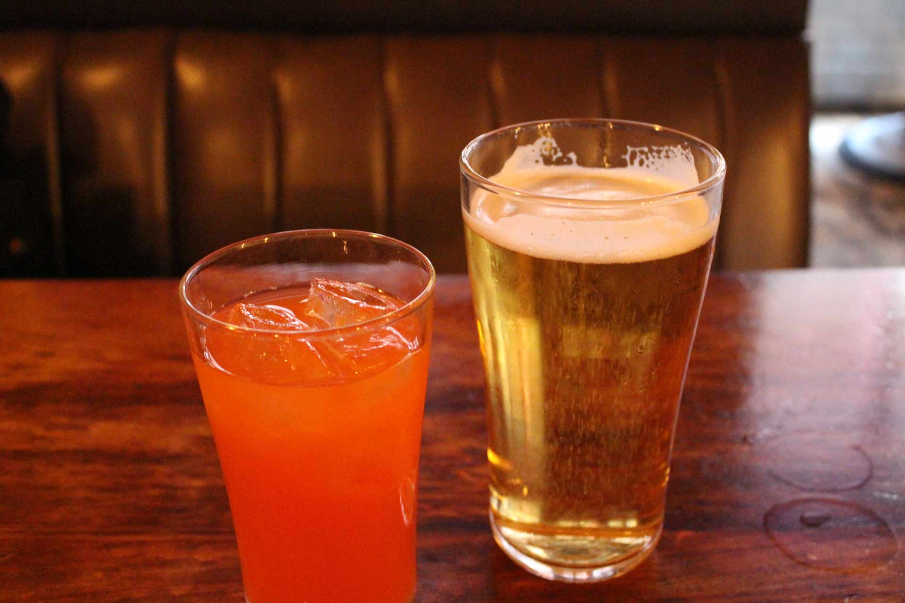
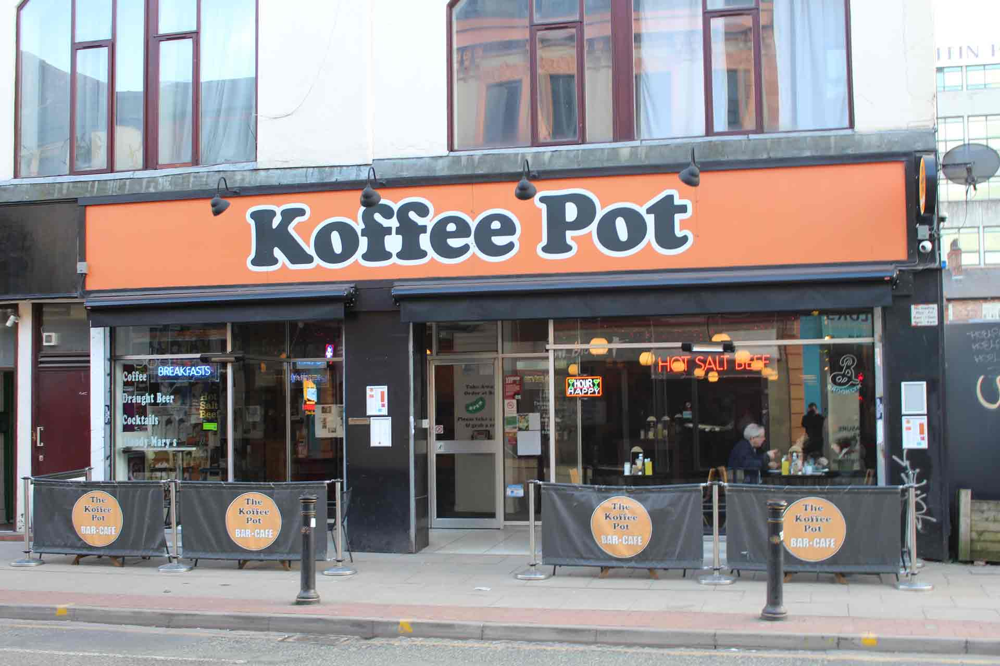
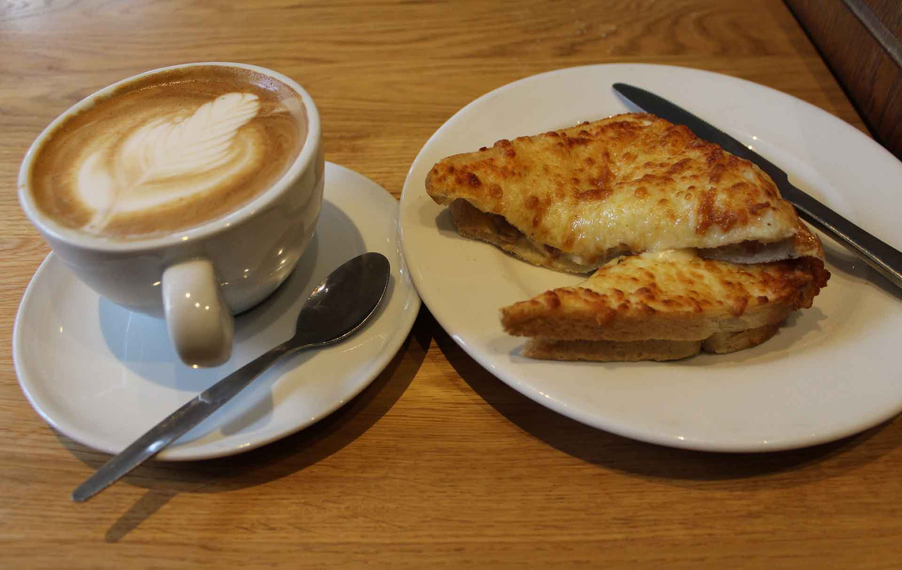
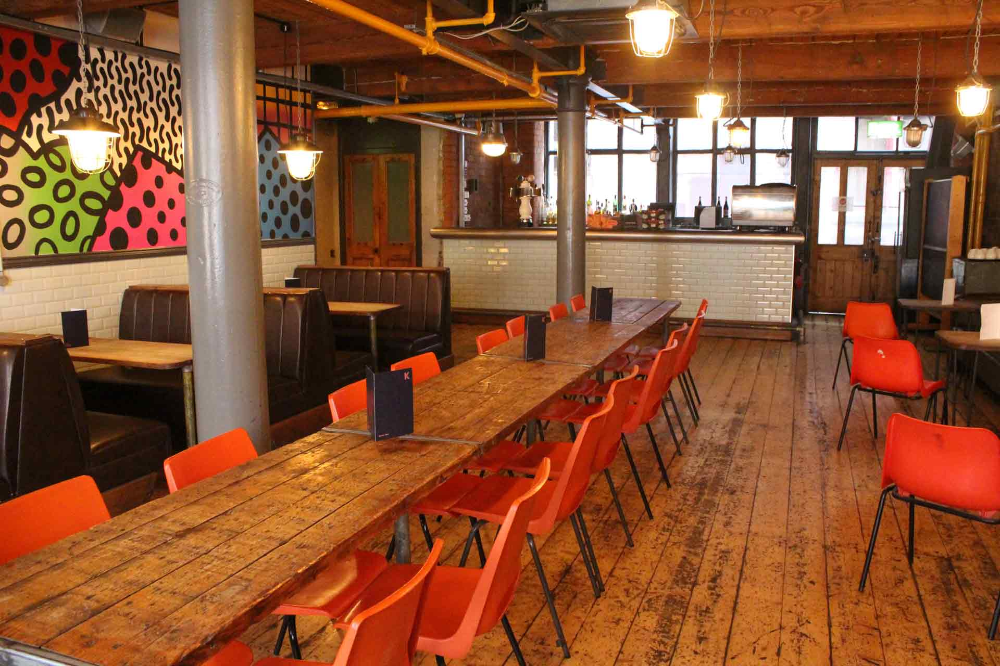
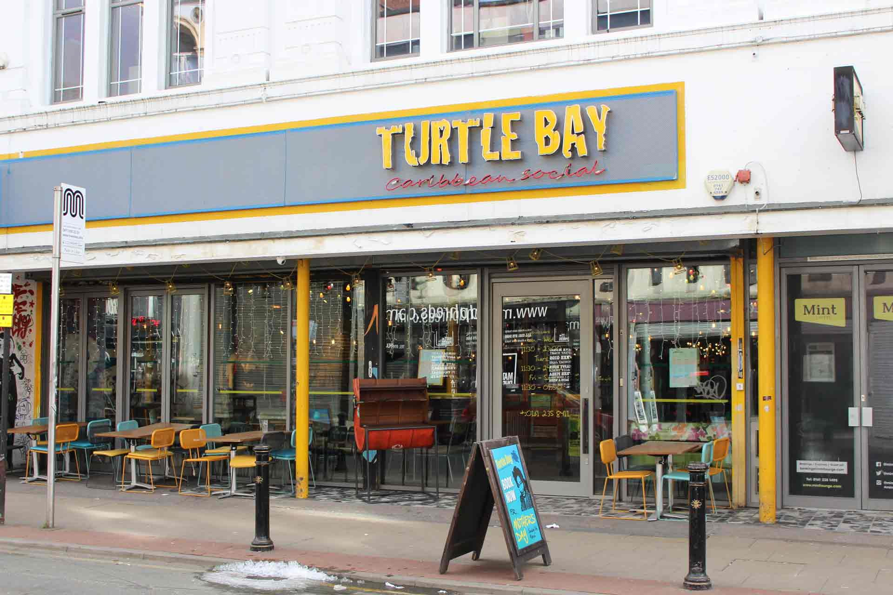
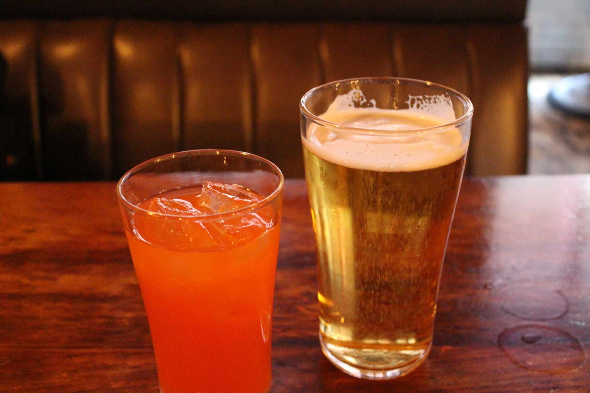
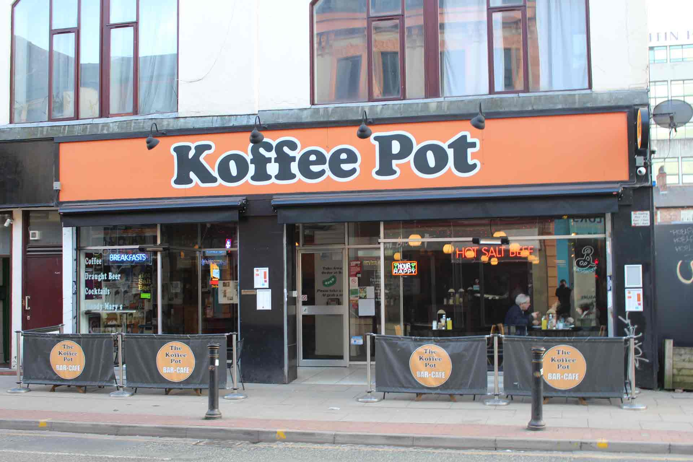
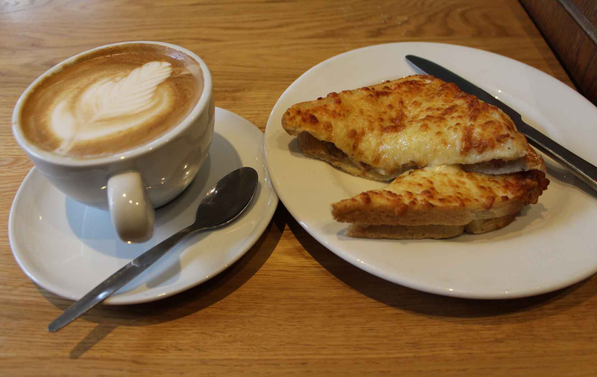
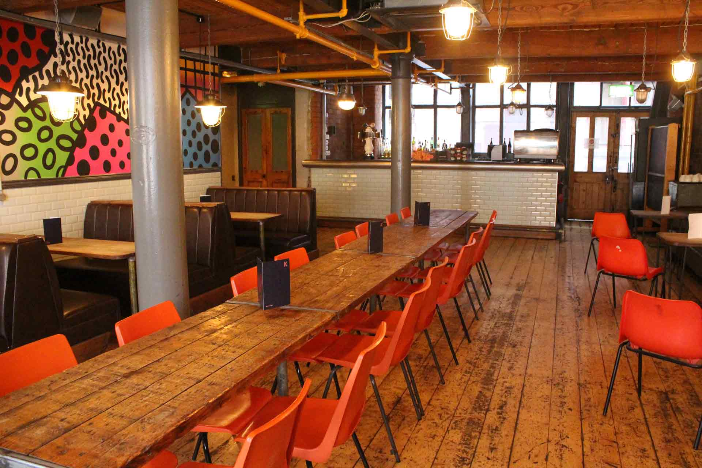
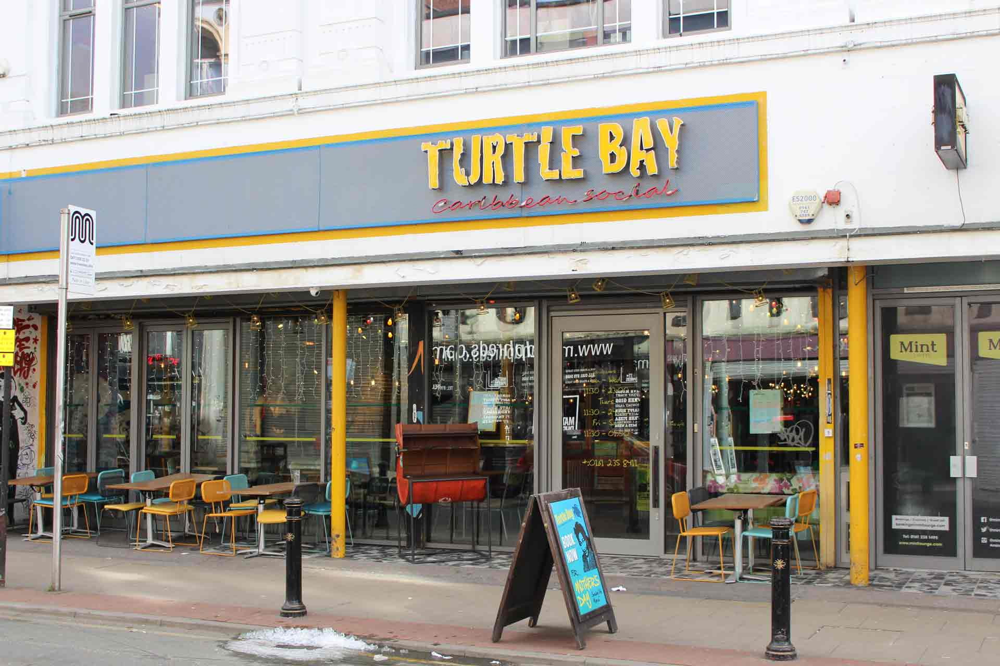

Welcome
Welcome to Explore Northern Quarter, here you will find a guide of the finest food and drink places around the famous Northern Quarter area of Manchester. These guides will include reviews, photos and maps to help you choose and be informed on the best places to eat, chill out with a coffee and have drinks with friends. Northern Quarter is also known for its beautiful Street Art so a section dedicated to various pieces, what they are of, including a short description and map location and photo gallery is also on offer.
Food & Drink
 









Inside the food & drink section , you will find our choices of Coffee Shops, Restaurants and Bars for evey occasion. Although these are only a few choices to whats on offer in the Northern Quarter, we hope our choice of places are a good starting point to a visit to the area. Whether it is a formal occasion, or you're just looking for something fun and relaxing. We believe there's something for everybody to find at the Northern Quarter.
Street Art
Manchester's Northern Quarter is famous for its various street art designs found throughout the area. Some are visibly displayed on more prominent buildings whist others are hidden away like treasures begging to be discovered. Whether you are just passing through, or actively searching for these gems, these pieces are worth the time. They are truly wonderous to behold. In this section, we have included a selection of our favourite pieces. They can give you an idea of the beauties that you can find simply by walking the streets of Manchester